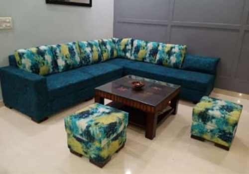

A sofa can look worn long before it is ready for replacement. A seat that sinks, a frame that creaks or fabric that has split at a seam may each have a different cause—and the right fix depends on what is happening underneath the upholstery. If you are comparing options for sofa repair in Noida Sector 63, this guide explains what to look for, what a repair visit involves and what to ask before approving work.
Athar Sofa Repair Center arranges doorstep sofa assessments in Noida, including Sector 63, subject to address and appointment availability. You can describe the problem and share a few photos before arranging a visit.
How to tell what may be wrong with your sofa
Pay attention to when the problem occurs and whether it affects one seat or the whole sofa. These details can help a repairer investigate the right area:
- A seat dips, feels lumpy or no longer supports you evenly
- The sofa rocks, creaks or has a loose arm or leg
- Fabric is thinning, torn, stained or pulling away at a seam
- Leather or leatherette is cracked, peeling or scuffed
- You hear a spring noise or feel a hard spot under the seat
- A sofa-cum-bed is difficult to open, close or lock
For example, a sagging cushion might need new foam, but it can also be caused by worn webbing or a damaged spring beneath it. Replacing the cushion alone will not solve the problem if the underlying support is at fault. An inspection should establish the likely cause before work is recommended.
Take a few clear photos: one of the whole sofa, one of the damaged area and, if possible, one that shows the issue when you sit or open the mechanism. Note when the problem started and whether it is getting worse.
What sofa repairs can be assessed at home?
A doorstep assessment means you do not have to move a bulky sofa just to find out what it needs. Depending on the sofa and the fault, the repairer can check the frame, seat support, cushions and covering at your home, then explain the options.
Some repairs may be completed on-site. Major structural work, special parts or extensive upholstery work can require a different arrangement. Ask whether the job can be done at home, how long it may take and whether any transport is needed before you confirm.
For a broader overview of available work, visit our sofa repair service page or see our local information for sofa repair in Noida.
Common sofa repair options
Frame, joints and springs
Loose joints, cracked wood, a wobbly leg or a broken spring can affect stability and comfort. The repairer should identify the affected support and explain whether it can be reinforced or needs a replacement part. If the frame is extensively damaged, compare the repair scope with the value and condition of the rest of the sofa.
Foam and cushions
Flattened or uneven cushions may benefit from new foam, but firmness, cushion size and the sofa's support system matter. If the seat still sinks after the cushion is removed, ask whether the webbing or springs also need attention.
Fabric, stitching and upholstery
A split seam or small worn area may need a different solution from a sofa whose fabric has faded across every seat. A local repair, new panels or a full fabric change may be possible, depending on the material and its condition. Consider how the sofa is used and how the fabric will be cleaned before choosing a replacement.
For more on fabric choices and replacement, see our guide to : https://atharsofarepaircenter.in/sofa-cloth-change-near-me.
Leather Sofa Repair
Leather and leatherette can wear differently. Cracks, peeling, tears and damaged stitching should be assessed with the material in mind; in some cases, a repair or touch-up may be suitable, while a larger damaged area may need recovering.
Wooden Sofa Repair
Loose joints and damaged wooden sections can affect how securely the sofa sits. Ask the repairer to show you the affected area and explain what will be reinforced or replaced.
Sofa Cum Bed Repair
If a sofa-cum-bed sticks or will not lock in place, avoid forcing the mechanism. Hinges, locks, wheels and the folding frame should be checked to determine whether the problem is mechanical, structural or both.
Should you repair or replace your sofa?
Repair can make sense when the frame is sound and the problem is limited to foam, cushions, springs or upholstery. It can also be a way to keep a sofa that fits your room well or has a design you still like.
Replacement may be worth considering if the frame is badly damaged, several parts keep failing, or the sofa no longer suits your needs. Compare the full repair estimate—not just the first repair identified—with the cost of a replacement that offers similar size and comfort. A straightforward inspection can help you make that comparison; it should not pressure you into either choice.
Sofa repair cost in Noida Sector 63
The price depends on what needs repair, the sofa's size and construction, the materials selected and whether the work can be done at home. The website lists sofa repair from ₹899 onwards, foam replacement at ₹799 per cushion and full reupholstery from ₹2,999 onwards. These are starting prices, not a confirmed quote for every sofa.
Ask what the estimate includes: labour, materials, any additional frame or support work and whether a separate visit or workshop arrangement is needed. You can see the full service-wise guide to sofa repair prices in Noida and the pricing listed on our homepage.
How to choose a sofa repair service in Sector 63
“Best” depends on the sofa and the work it needs. When comparing repair services, look for clear answers rather than a promise that sounds too good to be true:
- Does the repairer inspect the sofa before recommending work?
- Can they explain the cause, repair options and materials in plain language?
- Is the estimate clear about what is and is not included?
- Will the work be completed at home, or is another arrangement needed?
- Can you review the proposed work and cost before giving approval?
Arrange a sofa assessment in Noida Sector 63
To ask about a home visit, call or WhatsApp +91 9997939525. Share your Sector 63 address or nearby landmark, a short description of the problem and a few photos if convenient. The team can discuss the issue and confirm whether a visit can be scheduled for your location.
During the assessment, ask the repairer to explain the cause, the recommended work, the materials and the estimate. Review those details before deciding whether to proceed.
Include your sector or landmark, sofa type and number of seats, what has gone wrong, when you first noticed it and photos of the affected area. These details help the team understand what to discuss when confirming availability.
Frequently asked questions
How much does sofa repair cost in Noida Sector 63?
The website lists sofa repair from ₹899 onwards, foam replacement at ₹799 per cushion and full reupholstery from ₹2,999 onwards. Your estimate depends on the sofa, the damage, materials and work required. See the complete price guide for other listed services.
Can you repair a sofa without taking it away?
Some repairs may be completed at home. Whether yours can be done on-site depends on the damage, sofa construction, parts and tools needed. Ask about this during the assessment.
Can old sofa foam be replaced?
Yes. If the foam has compressed or lost its shape, replacement may help. The suitable foam depends on the cushion, sofa support and the firmness you prefer.
Can you change the fabric of an existing sofa?
Often, if the sofa is suitable for reupholstery. Check the frame and seat support first, and choose a fabric that suits how often the sofa is used and how it will be cleaned.
How do I know whether I should repair or replace my sofa?
Consider the frame, support, foam and upholstery together. If the structure is sound and the repair is limited, compare the estimate with replacement. Extensive frame damage or repeated failures may change the calculation.
Do you arrange sofa repair visits in Sector 63?
Athar Sofa Repair Center arranges doorstep assessments in Noida, including Sector 63, subject to the exact address and appointment availability. Call or WhatsApp to confirm your location.
Understand the repair before you commit.
A sagging seat, loose joint or worn cover does not automatically mean you need a new sofa. Find out what is causing the problem, review the recommended work and compare the estimate with your options.
For a sofa repair assessment in Noida Sector 63, call +91 9997939525 or message Athar Sofa Repair Center on WhatsApp. Please confirm address coverage and appointment availability before booking.